Fourier Transform¶
The 1D Fourier transform is:
![F[f(x)] \equiv \tilde f(\omega)
= \int_{-\infty}^{\infty} f(x) e^{-i\omega x}\,\d x
F^{-1}[\tilde f(\omega)] = f(x)
= {1\over2\pi}\int_{-\infty}^{\infty}
\tilde f(\omega) e^{+i\omega x}\,\d \omega](../../_images/math/9fb62c3445027a0cb4e744bb622c727f548308f3.png)
To show that it works:
![F^{-1} F [f(x)]
=
{1\over2\pi}\int_{-\infty}^{\infty} \left[\int_{-\infty}^{\infty}
f(x) e^{-i\omega x}\,\d x\right] e^{+i\omega x}\,\d \omega
=
{1\over2\pi}\int_{-\infty}^{\infty} \left[\int_{-\infty}^{\infty}
f(x') e^{-i\omega x'}\,\d x'\right] e^{+i\omega x}\,\d \omega
=
=
\int_{-\infty}^{\infty} f(x') \left[{1\over2\pi}\int_{-\infty}^{\infty}
e^{i\omega (x- x')}\,\d \omega \right] \,\d x'
=
\int_{-\infty}^{\infty} f(x') \delta(x-x') \,\d x'
=f(x)](../../_images/math/a0f1e4fbee5dd57836921191bbe74736bff28d4a.png)
If  is time (unit 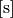), then
is time (unit 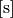), then  is angular frequency (unit
). One can express the Fourier transform in terms of
ordinary frequency
is angular frequency (unit
). One can express the Fourier transform in terms of
ordinary frequency  (unit ) by
substituting :
(unit ) by
substituting :
Both transformations are equivalent and only differ in whether we
express the transform in terms of or ,
the conversion
being given by .
Third frequently used convention that is however not equivalent to the above is:
The 3D Fourier transform is:
(1)
With obvious analogs for other conventions and dimensions.
The sign convention in the exponentials 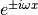 is arbitrary, one can as well flip the sign of the direct and inverse transforms. In particular, one often uses both sign conventions in the same equation. Consider a spacetime plane-wave . Then we obtain (using plus sign convention in the exponential for the direct transformation):
Finally, the equation depends
on the metric signature, in this case .
For a signature  we would get
.
we would get
.
Unlike the normalization convention, where one has to be very careful, the sign convention in Fourier transform is not a problem, one just has to remember to flip the sign for the inverse transform.
Radial Fourier Transform¶
As a special case when the function 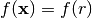 is spherically symmetric,
we introduce spherical coordinates such that the  -axis is along the
-axis is along the
 vector and calculate (we use 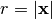 and 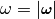):
vector and calculate (we use 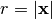 and 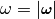):
![F[f(\mathbf{x})] \equiv \tilde f(\bomega)
= \int_{-\infty}^{\infty} f(\mathbf{x}) e^{-i\bomega \cdot
\mathbf{x}}\,\d^3 x
= \int_{-\infty}^{\infty} f(r) e^{-i\bomega \cdot
\mathbf{x}}\,\d^3 x =
= \int_0^\infty\d r \int_0^\pi\d\theta \int_0^{2\pi}\d\phi f(r)
e^{-i \omega r \cos\theta}\,r^2\sin\theta =
= 2\pi \int_0^\infty\d r \int_0^\pi\d\theta f(r)
e^{-i \omega r \cos\theta}\,r^2\sin\theta =
= 4\pi \int_0^\infty f(r) j_0(\omega r) \,r^2 \d r =
= 4\pi \int_0^\infty f(r) {\sin\omega r \over \omega r}\,r^2 \d r =
= {4\pi\over\omega} \int_0^\infty r\sin(\omega r) f(r) \,\d r\,,](../../_images/math/5d50740835b11f1df1ce6e1aa48ee46dde030cb5.png)
where we used:
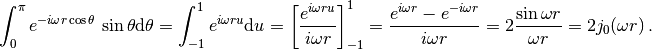
So the transform is real and spherically symmetric, since the result only
depends on .
Similarly, for the inverse transform:
![F^{-1}[\tilde f(\bomega)] = f(\mathbf{x})
= {1\over(2\pi)^3}\int_{-\infty}^{\infty}
\tilde f(\bomega) e^{+i\bomega \cdot \mathbf{x}}\,\d^3 \omega =
= {1\over(2\pi)^3}\int_{-\infty}^{\infty}
\tilde f(\omega) e^{+i\bomega \cdot \mathbf{x}}\,\d^3 \omega =
= {1\over(2\pi)^3}
{4\pi\over r} \int_0^\infty \omega\sin(\omega r) f(\omega) \,\d \omega
=
= {1\over 2\pi^2 r}
\int_0^\infty \omega\sin(\omega r) f(\omega) \,\d \omega](../../_images/math/6407d4b6b9aa557ab5b1273f065d511154d31261.png)
Fourier Transform of a Periodic Function (e.g. in a Crystal)¶
The Fourier transform in (1) requires the function  to be decaying fast enough in order to converge. In an infinite crystal, on the
other hand, the function is typically periodic (and thus not
decaying):
to be decaying fast enough in order to converge. In an infinite crystal, on the
other hand, the function is typically periodic (and thus not
decaying):
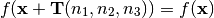
where 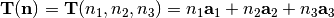 are the crystal translation vectors. As such, the Fourier transform in (1) is infinite, but it can be made finite by the following definition:
(2)![F[f(\mathbf{x})] \equiv \tilde f(\bomega)
= {1\over\Omega_\mathrm{crystal}}\int_{\Omega_\mathrm{crystal}} f(\mathbf{x}) e^{-i\bomega \cdot
\mathbf{x}}\,\d^3 x =
= {1\over\Omega_\mathrm{crystal}} \sum_\mathbf{n} \int_{\Omega_\mathrm{cell}}
f(\mathbf{x}+\mathbf{T}(\mathbf{n}))
e^{-i\bomega \cdot (\mathbf{x}+\mathbf{T}(\mathbf{n}))}\,\d^3 x =
= {1\over\Omega_\mathrm{crystal}} \sum_\mathbf{n} \int_{\Omega_\mathrm{cell}} f(\mathbf{x})
e^{-i\bomega \cdot (\mathbf{x}+\mathbf{T}(\mathbf{n}))}\,\d^3 x =
= {1\over\Omega_\mathrm{crystal}} \sum_\mathbf{n} e^{-i\bomega \cdot \mathbf{T}(\mathbf{n})} \int_{\Omega_\mathrm{cell}} f(\mathbf{x})
e^{-i\bomega \cdot \mathbf{x}}\,\d^3 x =
= {1\over\Omega_\mathrm{crystal}} N_\mathrm{cell} \int_{\Omega_\mathrm{cell}} f(\mathbf{x})
e^{-i\bomega \cdot \mathbf{x}}\,\d^3 x =
= {1\over\Omega_\mathrm{cell}} \int_{\Omega_\mathrm{cell}} f(\mathbf{x})
e^{-i\bomega \cdot \mathbf{x}}\,\d^3 x](../../_images/math/32bd4ecf75020161f9e3e1727ef1326c814164a2.png)
This assumes that the wave vector 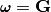 is equal to the reciprocal space vectors 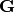, defined by
(3)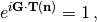
because then 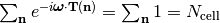.
For 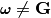, the expression 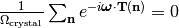 vanishes,
because the sum is bounded, and so dividing by the (infinite) crystal volume
makes the expression vanish, and so 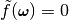. In other words, the
only non-zero Fourier components 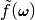 of any periodic function
are those with . Equivalently said, if the
Fourier components of a given function are non-zero for some
, then the function is not periodic.
Summary: the only difference between the crystal Fourier transform (2) and the usual Fourier transform (1) is the factor. The Fourier transform (2) of a periodic function is nonzero only for 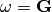 and is equal to:
(4)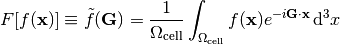
Note: the fact that the sum is bounded follows from:
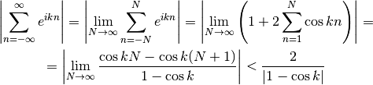
Because 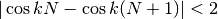. So for 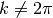 (i.e. the denominator is non-zero), the sum is bounded (to be precise, the infinite sum does not converge, because it oscillates, but the point is that the partial sum is always bounded). For 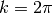, the sum is infinite, because 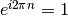.
Since we divided the direct Fourier transform in (1) by to obtain (2), we need to multiply the inverse transform in (1) by :
(5)![F^{-1}[\tilde f(\bomega)] = f(\mathbf{x})
= {\Omega_\mathrm{crystal}\over(2\pi)^3}\int_{-\infty}^{\infty}
\tilde f(\bomega) e^{+i\bomega \cdot \mathbf{x}}\,\d^3 \omega
=
= {\Omega_\mathrm{cell}N_\mathrm{cell}\over(2\pi)^3}\int_{-\infty}^{\infty}
\tilde f(\bomega) e^{+i\bomega \cdot \mathbf{x}}\,\d^3 \omega
=
= {N_\mathrm{cell}\over\Omega_\mathrm{BZ}}
\sum_{\mathbf{G}}
\int_{\Omega_\mathrm{BZ}}
\tilde f(\mathbf{G}+\bomega)
e^{+i(\mathbf{G}+\bomega) \cdot \mathbf{x}}\,\d^3 \omega
=
= {N_\mathrm{cell}\over\Omega_\mathrm{BZ}}
\sum_{\mathbf{G}} e^{+i\mathbf{G} \cdot \mathbf{x}}
\int_{\Omega_\mathrm{BZ}}
\tilde f(\mathbf{G}+\bomega)
e^{+i\bomega \cdot \mathbf{x}}\,\d^3 \omega
=
=
\sum_{\mathbf{G}} \tilde f(\mathbf{G}) e^{+i\mathbf{G} \cdot \mathbf{x}}
\int_{\Omega_\mathrm{BZ}}
\delta(\boldsymbol\omega)
e^{+i\boldsymbol\omega \cdot \mathbf{x}}\,d^3 \omega
=
=
\sum_{\mathbf{G}} \tilde f(\mathbf{G}) e^{+i\mathbf{G} \cdot \mathbf{x}}](../../_images/math/a08ab937558651e45b27e1b9b4034d46568bce14.png)
where we used the fact that:
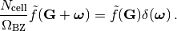
Alternatively, if one is only interested to show that the inverse transformation works, one can directly substitute the direct formula (4) into (5) as follows:
![F^{-1}[\tilde f(\mathbf{G})] = \sum_{\mathbf{G}}
\tilde f(\mathbf{G}) e^{+i\mathbf{G} \cdot \mathbf{x}} =
= \sum_{\mathbf{G}}
\left({1\over\Omega_\mathrm{cell}} \int_{\Omega_\mathrm{cell}}
f(\mathbf{x'})
e^{-i\mathbf{G} \cdot \mathbf{x'}}\,d^3 x'\right)
e^{+i\mathbf{G} \cdot \mathbf{x}} =
= {1\over\Omega_\mathrm{cell}} \int_{\Omega_\mathrm{cell}} f(\mathbf{x'})
\sum_{\mathbf{G}} e^{i\mathbf{G}
\cdot (\mathbf{x}-\mathbf{x'})}\,d^3 x' =
= {1\over\Omega_\mathrm{cell}} \int_{\Omega_\mathrm{cell}} f(\mathbf{x'})
(2\pi)^3
\delta\left({(2\pi)^3\over\Omega_\mathrm{cell}}
(\mathbf{x}-\mathbf{x'})\right) \,d^3 x' =
= {1\over\Omega_\mathrm{cell}} \int_{\Omega_\mathrm{cell}} f(\mathbf{x'})
(2\pi)^3 {\Omega_\mathrm{cell}\over (2\pi)^3}
\delta(\mathbf{x}-\mathbf{x'}) \,d^3 x' =
=f(\mathbf{x})](../../_images/math/9bb4f6f1007a99bdad9b92ae9628963a2438096d.png)
Thus we have shown that 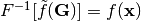.
One Dimension (Fourier Series)¶
In one dimension with a periodic function 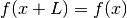, the volume of a unit cell is 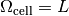 and the reciprocal space vectors 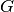 are defined using 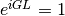 from which 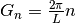. The equation (4) then becomes:
(6)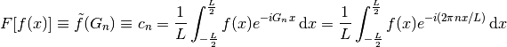
This is exactly the definition of a Fourier series (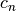 are the Fourier coefficients). The inverse transform follows from (5):
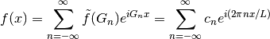
Discrete Fourier Transform¶
Starting from
When the space is discrete, that is , where
and , we obtain:
We only need to sample the reciprocal space at the intervals where . We finally get:
For the inverse transform, we obtain:
Laplace Transform¶
Laplace transform of  is:
is:
![L[f(x)] = \int_0^{\infty} f(x) e^{-s x}\,\d x
L^{-1}[\bar f(s)]
= {1\over2\pi i}\int_{\sigma-i\infty}^{\sigma+i\infty}
\bar f(s) e^{s x}\,\d s
= \sum_{s_0} \res_{s=s_0} (\bar f(s) e^{s x})](../../_images/math/8939823ab6133af32f1845a2d1adef453446dcd2.png)
The contour integration is over the vertical line and  is chosen large enough so that all residues are to the left of the line (that’s
because the Laplace transform is only defined for
is chosen large enough so that all residues are to the left of the line (that’s
because the Laplace transform is only defined for  larger than
the residues, so we have to integrate in this range as well). It can be shown
that the integral over the left semicircle goes to zero:
larger than
the residues, so we have to integrate in this range as well). It can be shown
that the integral over the left semicircle goes to zero:
![\left|\int_\Omega e^{sx}g(s) \d s \right|
=\left|\int_{\pi\over2}^{3\pi\over2} e^{(\sigma + Re^{i\varphi})x}
g(\sigma+Re^{i\varphi})iRe^{i\varphi}\d\varphi\right|
\le
\le R \max_\Omega |g(z)| e^{\sigma x}
\int_{\pi\over2}^{3\pi\over2}\left| e^{xRe^{i\varphi}}
\right|\d\varphi
=
= R \max_\Omega |g(z)| e^{\sigma x}
\int_{\pi\over2}^{3\pi\over2}e^{xR \cos \varphi} \d\varphi
=
= R \max_\Omega |g(z)| e^{\sigma x}
\int_0^{\pi}e^{-xR \sin \varphi} \d\varphi
=
< {\pi e^{\sigma x}\over x} \max_\Omega |g(z)|](../../_images/math/4a8097935cc530eeef3a35998c76507853f9e7c9.png)
so the complex integral is equal to the sum of all residues of in the complex plane.
To show that it works:
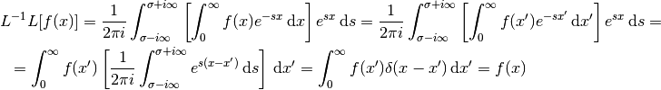
where we used:
and it can be derived from the Fourier transform by
transforming a function  :
:
and making a substitution :
![L[f(x)] \equiv \bar f(s) = F[U(x)] \equiv \tilde U(\omega)
= \int_{-\infty}^{\infty} U(x) e^{-i\omega x}\,\d x
= \int_0^{\infty} f(x) e^{-\sigma x} e^{-i\omega x}\,\d x
= \int_0^{\infty} f(x) e^{-s x}\,\d x
L^{-1}[\bar f(s)] \equiv f(x) = U(x) e^{\sigma x}
= F^{-1}[\tilde U(\omega)]e^{\sigma x}
= F^{-1}[\bar f(s)]e^{\sigma x}
= F^{-1}[\bar f(\sigma+i\omega)e^{\sigma x}]
= {1\over2\pi}\int_{-\infty}^{\infty} \bar f(\sigma + i\omega)e^{\sigma x}
e^{i\omega x}\,\d \omega
= {1\over2\pi i}\int_{\sigma-i\infty}^{\sigma+i\infty}
\bar f(s) e^{s x}\,\d s
= \sum_{s_0} \res_{s=s_0} (\bar f(s) e^{s x})](../../_images/math/2be27d3ddb29bec572de95bb7e366faad0dc3748.png)
Where the bar ( ) means the Laplace transform and tilde (
) means the Laplace transform and tilde ( )
means the Fourier transform.
)
means the Fourier transform.